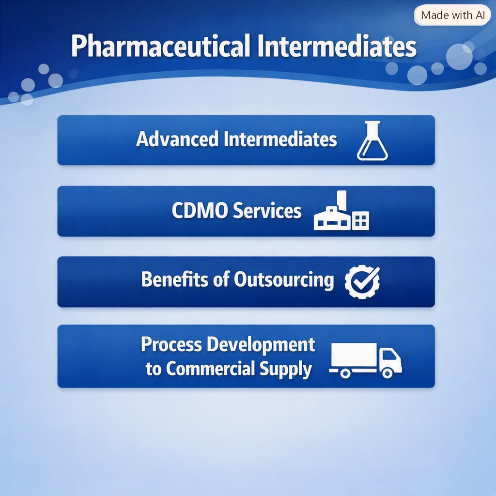

Pharmaceutical Intermediates: Manufacturing, Applications and CDMO Services
10 October 2026

Pharmaceutical intermediates are essential building blocks in the synthesis of active pharmaceutical ingredients (APIs). Produced during one or more stages of an API synthesis route, intermediates undergo further chemical transformation before becoming the final drug substance. From key starting materials and advanced intermediates to complex custom-synthesized compounds, pharmaceutical intermediates support the development and commercial production of APIs across a wide range of therapeutic areas.
As pharmaceutical companies increasingly outsource chemical manufacturing and seek reliable supply partners, the role of intermediate manufacturers and specialized CDMOs has become increasingly important. Companies offering intermediate manufacturing, custom synthesis and contract manufacturing of intermediates can support customers from early process development through scale-up and commercial supply.
What Are Pharmaceutical Intermediates?
Pharmaceutical intermediates are chemical compounds generated during the synthesis of an API and subsequently converted into another intermediate or the final API. Depending on the synthesis route, an API may require several intermediate stages, with each stage involving specific chemical reactions, isolation and purification.
Some intermediates are relatively simple chemical building blocks, while others are structurally complex molecules that require sophisticated chemistry and specialized manufacturing capabilities. Intermediate manufacturers therefore need expertise in process chemistry, synthesis, purification and scale-up to consistently produce the required compounds.
Among the different categories, advanced intermediates are particularly important because they are generally closer to the final API in terms of molecular structure. Advanced intermediate manufacturers often work on multi-step synthesis routes involving complex chemistry, making their process-development and manufacturing capabilities particularly valuable to pharmaceutical companies.
Types of Pharmaceutical Intermediates
Pharmaceutical intermediates can be broadly categorized based on their role in the API synthesis process and the specific requirements of the pharmaceutical company. The main categories include key starting materials (KSMs), advanced intermediates and custom intermediates.
Key starting materials (KSMs) are the initial chemical building blocks used to begin an API synthesis route. They undergo one or more chemical transformations to produce subsequent intermediates.
Advanced intermediates are produced at later stages of the synthesis route and are structurally closer to the final API. They may require multiple synthetic steps, specialized chemical reactions and controlled purification processes.
Custom intermediates are intermediates manufactured according to customer-specific requirements. These may involve customized synthesis routes, specifications, production quantities or impurity profiles.
Intermediate Manufacturing Capabilities
Modern intermediate manufacturing involves much more than simply executing a chemical reaction. Manufacturers need appropriate process chemistry expertise, production infrastructure, analytical support and the ability to scale processes from laboratory quantities to larger production batches.
Key capabilities may include multi-step organic synthesis, process development and optimization, custom synthesis, scale-up and technology transfer, purification and crystallization, chiral synthesis and resolution and commercial manufacturing
The specific capabilities required depend on the molecule, synthesis route, production volume and customer requirements. For complex projects, advanced intermediate manufacturing may require specialized equipment, experienced process chemists and carefully controlled reaction and purification processes.
The development of pharmaceutical intermediates often starts with route scouting and process development. Multiple synthetic approaches may be assessed to identify a practical route based on yield, raw-material availability, safety, cost, impurity generation and scalability.
For advanced molecules, advanced intermediate manufacturing can involve several rounds of process optimization before the process is ready for commercial scale. An experienced advanced intermediate manufacturer can support these activities while maintaining consistency between development batches and larger-scale production.
Custom Manufacturing of Pharmaceutical Intermediates
Not all pharmaceutical intermediates are available as standard products. Pharmaceutical and biotechnology companies may require customized molecules for specific API development programs, making custom synthesis an important service offered by many intermediate manufacturers.
Contract manufacturing of Intermediates (CMO for Intermediates) allows pharmaceutical companies to outsource the production of these compounds to specialized manufacturing organizations. For more complex projects, contract development and manufacturing of intermediates can provide a broader solution by combining development and manufacturing activities under one partner. This can be particularly useful when the synthesis route is still being optimized or when the customer expects the project to progress from development to commercial supply.
Working with a CMO for intermediates can provide access to established manufacturing infrastructure without requiring pharmaceutical companies to invest in additional production capacity. The role of a CMO for intermediates can extend beyond routine production.
For companies requiring more specialized chemistry, a CMO for advanced intermediates can provide manufacturing support for compounds that require complex or multi-step synthesis. A CMO for advanced intermediates may have specialized equipment and process chemistry capabilities designed to handle advanced molecules at different stages of development and production.
CDMO Services for Pharmaceutical Intermediates
The market for contract development and manufacturing of intermediates has expanded as pharmaceutical companies increasingly outsource development and manufacturing activities.
A CDMO specializing in pharmaceutical intermediates can work with customers during early development and subsequently transfer the optimized process into larger-scale production. This integrated approach can reduce the need to move a project between multiple suppliers and can simplify communication between development and manufacturing teams.
Contract development and manufacturing of intermediates can be particularly valuable for innovative pharmaceutical companies working with new chemical entities, complex synthesis routes or molecules that require significant process optimization.
Advanced intermediate manufacturing requires specialized knowledge because advanced intermediates are generally more closely connected to the final API synthesis.
For pharmaceutical companies looking to outsource these requirements, selecting an experienced advanced intermediate manufacturer can help support continuity from process development to larger-scale manufacturing. Advanced intermediate manufacturers with integrated development and production capabilities can also help customers shorten technology-transfer timelines and improve process scalability.
Why Pharmaceutical Companies Outsource Intermediate Manufacturing
Outsourcing intermediate manufacturing can provide pharmaceutical companies with access to specialized expertise and manufacturing capacity without requiring significant investment in additional infrastructure.
A capable CMO for intermediates or advanced intermediate manufacturer can help companies manage production requirements while maintaining flexibility in manufacturing capacity. Outsourcing contract manufacturing of intermediates can also allow internal teams to focus on API development, formulation, clinical development and commercialization.
For more complex programs, outsourcing to a CMO for advanced intermediates or an advanced intermediate manufacturer can provide access to specialized chemistry and manufacturing infrastructure. Meanwhile, contract development and manufacturing of intermediates can offer an integrated pathway from early process development to commercial supply.
Similarly, organizations looking for integrated development and manufacturing may choose contract development and manufacturing of intermediates through a specialized CDMO.
The Future of Pharmaceutical Intermediate Manufacturing
The pharmaceutical industry continues to require reliable, scalable and flexible sources of pharmaceutical intermediates. Increasing outsourcing, the development of complex APIs and the need for specialized chemistry are creating opportunities for both established and specialized intermediate manufacturers.
At the same time, pharmaceutical companies are increasingly looking for partners capable of supporting complete development and manufacturing programs. This is driving demand for contract development and manufacturing of intermediates, particularly for complex molecules that require significant process-development expertise before commercial production.
A CMO for intermediates can provide reliable manufacturing capacity, while a CMO for advanced intermediates can support more complex compounds. Companies requiring broader chemistry services may also work with a CMO for fine chemicals.
Advanced intermediate manufacturers and providers of advanced intermediate manufacturing are also expected to remain important as pharmaceutical pipelines include increasingly sophisticated molecules. Organizations that combine process chemistry, custom synthesis, scalable manufacturing and integrated CDMO capabilities can offer significant value to customers.